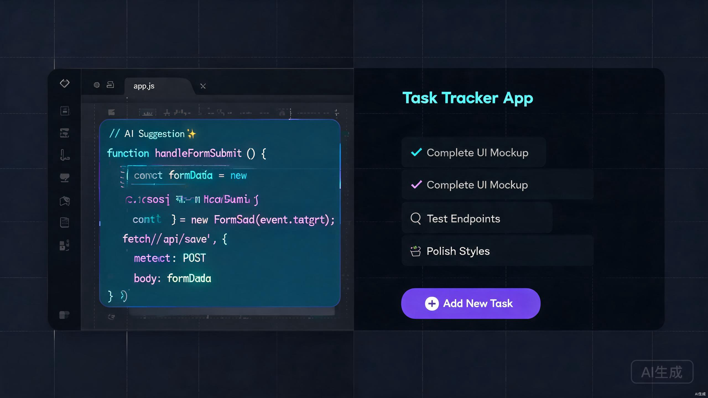

AI 编程时代，人人都是产品经理 The Age of AI Coding: Everyone Can Be a Product Creator
你有没有过这样的想法："要是有一个能帮我解决 XX 问题的 App 就好了"——然后查了一下开发成本，发现动辄几万、几十万，于是默默放弃了？ Have you ever had an idea like, "I wish there was an app that solved problem X" — only to look into development costs, find they run into tens of thousands of dollars, and quietly give up?
2024 年底 Cursor 横空出世，2025 年它已经成为了开发者圈子里最火的工具。但很多人不知道的是：你根本不需要会写代码，也能用 Cursor 做出一个能用的产品。 Cursor burst onto the scene in late 2024, and by 2025 it has become the hottest tool in the developer community. What many people don't realize: you don't need to know how to code to build a working product with Cursor.
"最好的学习方式不是看书，而是直接动手做一个你真正想要的东西。Cursor 让这件事变得前所未有地简单。" "The best way to learn is not by reading books, but by building something you actually want. Cursor makes this easier than ever before."
这篇文章，我会手把手带你走完整个流程——从安装 Cursor，到做出你的第一个产品，再到部署上线。全程不需要你写一行代码，你只需要会说人话就行。 In this article, I'll walk you through the entire process — from installing Cursor, to building your first product, to deploying it online. You won't need to write a single line of code. You just need to be able to describe what you want in plain language.
Cursor 是什么？ What is Cursor?
Cursor 是一款基于 VS Code 的 AI 编程工具。它长得很像 VS Code，但里面住着一个"AI 程序员"。你可以用自然语言告诉它你想做什么，它会直接帮你写代码、改代码、甚至帮你管理整个项目。 Cursor is an AI-powered code editor built on top of VS Code. It looks and feels like VS Code, but it has an "AI programmer" living inside. You can tell it what you want in plain language, and it will write code, modify code, and even manage your entire project for you.
它的两个核心功能是： Its two core features are:
Composer 可以同时修改多个文件。比如你说"帮我做一个登录页面"，它会自动创建 HTML、CSS、JavaScript 文件，并且在所有文件中协调修改。这是 Cursor 和普通 AI 聊天工具最大的区别——它不是给你一堆代码让你自己粘贴，而是直接帮你改好项目里的文件。 Composer can modify multiple files simultaneously. For example, if you say "create a login page for me," it will automatically create HTML, CSS, and JavaScript files and coordinate changes across all of them. This is the biggest difference between Cursor and regular AI chat tools — it doesn't just give you a block of code to paste, it directly modifies the files in your project.
Chat 让你可以用自然语言和 Cursor 对话。你可以问它"这个代码是什么意思"、"为什么页面显示不正常"，也可以让它"把这个按钮改成蓝色"。它就像一个随时在线的编程导师，而且免费。 Chat lets you have natural language conversations with Cursor. You can ask it "what does this code do," "why is my page displaying incorrectly," or tell it "change this button to blue." It's like having a programming tutor available 24/7, and it's free.
除此之外，Cursor 还有 Tab 补全（你写注释，它自动补全代码）、代码库索引（让它理解你整个项目的结构）等功能。但对于零基础的初学者来说，Composer 和 Chat 就够用了。 Beyond that, Cursor also features Tab completion (you write comments, it auto-completes the code) and codebase indexing (letting it understand your entire project structure). But for beginners starting from zero, Composer and Chat are more than enough.
为什么选 Cursor，而不是其他方式？ Why Choose Cursor Over Other Approaches?
你可能会想：我直接让 ChatGPT 写代码不就行了吗？或者干脆学一下编程自己写？下面这个对比表，可以帮你直观地看到区别。 You might think: "Can't I just have ChatGPT write code for me?" Or maybe, "Should I just learn to code myself?" The comparison below shows the differences at a glance.
直接让 ChatGPT 写代码 Asking ChatGPT to Write Code
- 给你一段代码，但要你自己创建文件、粘贴进去 Gives you code snippets, but you have to create files and paste them in yourself
- 改一个地方，整段代码要重新生成 Change one thing, and you have to regenerate the entire code block
- 不了解你的项目上下文，改了这里可能坏了那里 No awareness of your project context — fixing one thing may break another
- 无法直接运行和预览，出错不知道哪里错了 Can't run or preview directly — when errors happen, you don't know where
- 适合：写一小段代码片段、解答简单问题 Good for: small code snippets, answering simple questions
传统手写代码 Traditional Manual Coding
- 学习曲线陡峭，入门至少需要 3-6 个月 Steep learning curve — takes at least 3-6 months to get started
- 每一行都要自己写，一个小错误可能卡几个小时 Every line written manually — one small bug can stall you for hours
- 需要同时学 HTML/CSS/JS/后端/数据库等众多技术 Must learn HTML, CSS, JS, backend, databases, and many more technologies simultaneously
- 适合：想做程序员、追求深度掌控的人 Good for: people who want to become programmers, those who need deep control
Cursor AI IDE ✓ Cursor AI IDE ✓
- 直接在你的项目里写代码、改代码，所见即所得 Writes and modifies code directly in your project — what you see is what you get
- 理解整个项目，改一处自动协调其他相关文件 Understands your entire project — changes one file and auto-coordinates related files
- 内置终端，随时运行和预览 Built-in terminal for running and previewing anytime
- 出错自动分析，给出修复建议或直接修复 Auto-analyzes errors, provides fix suggestions or fixes them directly
- 零代码基础也能用，用自然语言描述需求即可 Zero coding experience needed — just describe what you want in plain language
简单说：ChatGPT 是一个"顾问"——它能给你建议，但不能替你干活；Cursor 是一个"合伙人"——它直接在你项目里动手做事。 In short: ChatGPT is an "advisor" — it can give you suggestions but can't do the work for you; Cursor is a "partner" — it works directly inside your project.
五步实战：从零到上线 Five Steps: From Zero to Deployment
好，话不多说，我们直接开始。下面是完整的实战流程，每一步我都会给出具体的操作说明。 Alright, let's get started. Below is the complete hands-on workflow with specific instructions for each step.
安装 Cursor Install Cursor
打开 cursor.com，点击下载。Cursor 支持 macOS 和 Windows。安装完成后，打开 Cursor，用你的 GitHub 账号 登录（没有的话注册一个，免费的，两分钟搞定）。 Go to cursor.com and click Download. Cursor supports macOS and Windows. Once installed, open Cursor and sign in with your GitHub account (create one if you don't have one — it's free and takes two minutes).
创建你的第一个项目 Create Your First Project
打开 Cursor 后，按下 Ctrl+Shift+I（Mac 上是 Cmd+Shift+I）打开 Composer 面板，或者点击左侧边栏的 Composer 图标。然后，用你最自然的语言告诉 Cursor 你想做什么。 After opening Cursor, press Ctrl+Shift+I (or Cmd+Shift+I on Mac) to open the Composer panel, or click the Composer icon in the left sidebar. Then, tell Cursor what you want to build in your most natural language.
我想做一个个人记账本网页应用。 功能需求： 1. 可以添加一笔支出，包含金额、分类（餐饮/交通/购物/其他）、备注 2. 首页显示本月总支出和分类占比的饼图 3. 用 localStorage 保存数据，不需要后端 4. 界面要简洁好看，手机上也能用 请帮我生成完整的项目结构。I want to build a personal expense tracker web app. Requirements: 1. Add an expense entry with amount, category (food/transport/shopping/other), and notes 2. Homepage shows this month's total spending and a pie chart of category breakdown 3. Use localStorage to save data, no backend needed 4. Clean and modern UI that works on mobile too Please generate the complete project structure.
Cursor 会分析你的需求，然后自动创建项目文件。它会生成 HTML 页面、CSS 样式、JavaScript 逻辑，甚至 package.json 配置文件。你不需要理解这些文件的每一行——Cursor 就是你的"程序员"，你只需要当好"产品经理"。 Cursor will analyze your requirements and automatically create project files. It generates HTML pages, CSS styles, JavaScript logic, and even package.json configuration files. You don't need to understand every line — Cursor is your "programmer" and you just need to be the "product manager."
用自然语言修改代码 Modify Code Using Natural Language
项目生成后，你肯定会发现有些地方不满意。别担心，不需要手动改代码。你有两种方式来修改： After the project is generated, you'll likely find things you want to change. Don't worry — no need to manually edit code. You have two ways to modify things:
方式一：选中代码，Cmd+K 内联编辑。在编辑器里选中你想修改的代码（不用完全看懂，大概知道是哪块就行），按下 Cmd+K（Windows 上是 Ctrl+K），然后告诉 Cursor 你想怎么改： Method 1: Select code and press Cmd+K for inline editing. In the editor, select the code you want to modify (you don't need to fully understand it — just roughly know which part it is), press Cmd+K (or Ctrl+K on Windows), and tell Cursor what you want to change:
把这个按钮的颜色改成绿色，圆角加大一点Change this button color to green and increase the border radius
Cursor 会给出修改预览，你点 Accept 就会直接应用到代码中。 Cursor will show a diff preview. Click Accept and the change is applied directly to the code.
方式二：用 Composer 做大范围修改。如果你的改动涉及多个文件（比如"加一个用户登录功能"），直接在 Composer 里描述，Cursor 会自动跨文件协调修改： Method 2: Use Composer for large-scale changes. If your change involves multiple files (like "add a user login feature"), describe it in Composer and Cursor will coordinate changes across files automatically:
帮我给这个记账应用加一个暗色模式切换功能。 白天自动用亮色主题，晚上 8 点后自动切到暗色主题。 在右上角也加一个手动切换的开关。Add a dark mode toggle to this expense tracker app. Auto-switch to dark theme after 8 PM, light theme during the day. Also add a manual toggle switch in the top-right corner.
预览和调试 Preview and Debug
Cursor 内嵌了终端。你可以直接在 Cursor 里运行你的项目。对于网页应用，通常是在终端输入： Cursor has a built-in terminal. You can run your project directly inside Cursor. For web apps, you usually type this in the terminal:
npm install npm run dev
然后打开浏览器访问 http://localhost:3000 就能看到你的产品了。
Then open your browser and visit http://localhost:3000 to see your product.
如果遇到报错——别慌。直接把终端里的错误信息复制，打开 Chat 面板粘贴进去： If you encounter errors — don't panic. Just copy the error message from the terminal, open the Chat panel, and paste it in:
运行的时候报了这个错误，帮我看看怎么修： （粘贴错误信息）I got this error when running the project, can you help me fix it: (paste error message)
Cursor 大多数时候会直接告诉你问题出在哪里，并且帮你修好。如果需要你手动操作，它也会一步步指导你。 Most of the time, Cursor will identify the problem and fix it directly. If manual intervention is needed, it will guide you step by step.
@terminal 可以让 Cursor 直接读取终端输出，不用手动复制错误信息。
Make good use of Cursor's @terminal feature. Type @terminal in Chat to let Cursor directly read terminal output — no need to manually copy error messages.
部署上线 Deploy to the Web
产品做完了，当然要让别人也能看到。部署其实很简单，推荐两个平台： Once your product is done, you'll want others to see it too. Deployment is actually quite simple. I recommend two platforms:
1. 把你的项目推送到 GitHub（Cursor 可以帮你用命令行完成）
2. 打开 vercel.com，用 GitHub 登录
3. 点击 "New Project"，选择你的 GitHub 仓库
4. 点击 "Deploy"，等两分钟
5. 搞定！你会得到一个免费的网址，比如 your-app.vercel.app
1. Push your project to GitHub (Cursor can help you do this via command line)
2. Go to vercel.com and sign in with GitHub
3. Click "New Project" and select your GitHub repository
4. Click "Deploy" and wait about two minutes
5. Done! You'll get a free URL like your-app.vercel.app
1. 把项目推送到 GitHub
2. 在仓库的 Settings 里找到 Pages
3. 选择分支和目录，保存
4. 几分钟后你的网站就能通过 username.github.io/repo-name 访问了
1. Push your project to GitHub
2. Go to Settings > Pages in your repository
3. Select branch and directory, then save
4. In a few minutes, your site will be accessible at username.github.io/repo-name
三个实用技巧，让你效率翻倍 Three Practical Tips to Double Your Productivity
用了一段时间 Cursor 后，我总结了三个最重要的技巧。掌握这三个，你用 Cursor 的体验会好很多。 After using Cursor for a while, I've summarized the three most important tips. Master these and your Cursor experience will improve dramatically.
不要一次性丢给 Cursor 一个巨大的需求。比如不要说"帮我做一个完整的电商网站"——这会让 AI 无所适从，结果往往不理想。正确做法是拆成小步骤：先做首页，再做商品列表，然后做购物车，最后做结账。每次只让 Cursor 专注做一件事，质量会高得多。 Don't throw a massive requirement at Cursor all at once. For example, don't say "build me a complete e-commerce website" — this overwhelms the AI and the results are usually poor. The right approach is to break it into small steps: first the homepage, then the product listing, then the shopping cart, and finally the checkout. Have Cursor focus on one thing at a time for much better quality.
当你的项目变大后，Cursor 有时候会"忘记"之前写的代码。在 Chat 里输入 @codebase，Cursor 会索引你整个项目的代码库，这样它的回答和修改就会考虑整个项目的上下文，不会做出前后矛盾的改动。
As your project grows, Cursor sometimes "forgets" code written earlier. Type @codebase in Chat, and Cursor will index your entire project's codebase. This way, its responses and modifications will consider the full project context and won't make contradictory changes.
@codebase 这个项目的数据是怎么存储的？帮我在现有的数据结构上，加一个"收入"类型How is data stored in this project? Help me add an "income" type to the existing data structure
这是初学者最容易卡住的地方。遇到报错页面红了、功能不工作了——不要自己瞎猜。直接把终端报错信息、浏览器控制台报错信息复制给 Cursor，它会分析问题并帮你修复。十次有八次，Cursor 能直接解决你的问题。 This is where beginners get stuck most often. When you see red error pages or broken features — don't guess randomly. Just copy the terminal errors or browser console errors and paste them to Cursor. It will analyze the problem and help you fix it. Eight times out of ten, Cursor resolves the issue directly.
真实案例：两天做一个点餐小程序 Real Case Study: Building a Food Ordering App in Two Days
我的一个朋友开了一家小餐馆，一直想做一个扫码点餐的小程序，但咨询了几家外包公司，报价最低的也要两三万，而且要等一个月。他觉得太贵了，就搁置了。 A friend of mine runs a small restaurant and always wanted a QR-code-based food ordering mini-app. But after getting quotes from several outsourcing companies — the cheapest being 20,000-30,000 RMB with a one-month wait — he thought it was too expensive and shelved the idea.
后来我教他用 Cursor，整个过程是这样的： Later, I taught him to use Cursor. The whole process went like this:
第一天上午：安装 Cursor，我帮他写了第一版提示词，描述了他想要的功能（菜单展示、分类筛选、下单提交）。Cursor 帮他生成了一个 React + Tailwind 的项目。 Day 1 Morning: Installed Cursor. I helped him write the first prompt describing the features he wanted (menu display, category filtering, order submission). Cursor generated a React + Tailwind project for him.
第一天下午：用 Composer 反复调整界面——"把菜品图片变大"、"加一个购物车角标"、"分类用横向滚动的标签"。他只会说中文，全程用中文和 Cursor 对话。 Day 1 Afternoon: Used Composer to iteratively adjust the UI — "make the food photos bigger," "add a cart badge," "use horizontal scrolling tabs for categories." He only speaks Chinese, and interacted with Cursor entirely in Chinese.
第二天上午：我帮他加了一个简单的后台管理页面，可以编辑菜品名称、价格和图片。这样他以后可以自己更新菜单。 Day 2 Morning: I helped him add a simple admin page where he can edit dish names, prices, and images. This way he can update the menu himself in the future.
第二天下午：部署到 Vercel，绑定域名，打印二维码贴在餐桌上。 Day 2 Afternoon: Deployed to Vercel, connected a custom domain, and printed QR codes for the tables.
结果：从零开始，两天时间，零代码基础，做出了一个能用的点餐系统。他现在每天都在用，偶尔需要改东西，直接问 Cursor 就行。 Result: From scratch, in just two days, with zero coding experience, he built a working food ordering system. He uses it every day now. When he needs changes, he just asks Cursor.
"我以为做软件是程序员的事，没想到用 Cursor 跟聊天一样就能做出来。" —— 我的餐饮朋友 "I thought building software was only for programmers. I didn't expect it could be as easy as chatting with Cursor." — my restaurant friend
常见问题 Frequently Asked Questions
Cursor 有免费版本（Hobby plan），每月有一定次数的免费 AI 调用额度。对于初学者和做个人小项目来说完全够用。如果需要大量使用，可以升级到 Pro 计划（$20/月）。不过建议先用免费版试试，确认自己真的需要再升级。 Cursor has a free version (Hobby plan) with a monthly allowance of free AI requests. For beginners and small personal projects, this is more than enough. If you need heavy usage, you can upgrade to the Pro plan ($20/month). I recommend trying the free version first and only upgrading when you're sure you need it.
真的可以。这篇文章面向的就是零基础的人。你不需要理解 HTML、CSS、JavaScript 是什么，你只需要能清楚地描述你想要什么。Cursor 会替你处理所有的技术细节。当然，如果你愿意边做边学一些基础概念，那会让你和 Cursor 的配合更高效。 Yes, really. This article is written for people starting from absolute zero. You don't need to understand what HTML, CSS, or JavaScript are — you just need to clearly describe what you want. Cursor handles all the technical details for you. Of course, if you're willing to pick up some basic concepts along the way, it'll make you even more efficient when working with Cursor.
实话实说，AI 写的代码并不总是完美的。对于简单的个人项目和小型工具，通常不会有太大问题。但如果你要做涉及用户隐私数据、支付功能的产品，建议找有经验的人帮你审查代码，或者请专业开发者做安全审计。AI 是强大的助手，但最终的产品责任在你自己。 Honestly, AI-generated code isn't always perfect. For simple personal projects and small tools, it's usually fine. But if you're building something that handles user privacy data or payment features, I recommend having an experienced person review your code or hiring a professional developer for a security audit. AI is a powerful assistant, but ultimate product responsibility lies with you.
技术上来说，Cursor 生成的代码版权归属目前没有明确的法律定论。对于个人项目和内部工具来说完全没问题。如果要正式商用，建议了解相关的法律风险，必要时咨询法律专业人士。不过很多独立开发者和创业者已经在用 Cursor 构建商业产品了。 Technically, the copyright of code generated by Cursor doesn't have clear legal precedent yet. For personal projects and internal tools, there's no issue at all. If you plan to commercialize formally, I recommend understanding the legal risks and consulting a legal professional if necessary. That said, many indie developers and entrepreneurs are already building commercial products with Cursor.
Cursor 有一个项目大小的上下文窗口限制。当项目非常大的时候，AI 可能无法同时关注所有代码。这时候你需要善用 @codebase 和 @folder 来缩小 AI 的关注范围，只让它关注你正在修改的部分。另外，良好的项目结构（文件组织清晰、命名规范）也会帮助 Cursor 更好地理解你的项目。 Cursor has a context window limit for project size. When your project gets very large, the AI may not be able to attend to all code simultaneously. This is when you need to use @codebase and @folder to narrow the AI's focus to only the parts you're modifying. Additionally, good project structure (clear file organization, consistent naming) helps Cursor understand your project better.
功能上没有区别。主要区别是快捷键不同：Mac 用 Cmd 键的地方，Windows 用 Ctrl 键。除此之外，两个平台上的体验几乎完全一致。另外 Linux 也有 Cursor 的支持。 Functionally, there's no difference. The main variation is keyboard shortcuts: where Mac uses Cmd, Windows uses Ctrl. Beyond that, the experience is nearly identical on both platforms. Linux is also supported.
最重要的不是技术，是开始行动 The Most Important Thing Is Not Technology — It's Taking Action
读完这篇文章，你可能觉得自己已经"学会"了用 Cursor。但说实话，看 100 篇教程不如亲手做 1 个项目。 After reading this article, you might feel like you've "learned" how to use Cursor. But honestly, reading 100 tutorials is not as valuable as building one project yourself.
我建议你现在就打开 cursor.com，下载安装，然后想一个你一直想做的小东西——哪怕只是一个个人主页、一个记账小工具、一个习惯打卡 App。然后，跟着上面五个步骤，把它做出来。 I suggest you open cursor.com right now, download and install it, then think of something small you've always wanted to build — even if it's just a personal homepage, a simple expense tracker, or a habit-checking app. Then, follow the five steps above and build it.
"每个专家都曾是初学者。你不需要准备好才开始，你需要开始了才会准备好。" "Every expert was once a beginner. You don't need to be ready to start — you need to start to get ready."
AI 编程的时代才刚刚开始。Cursor 不是终点，它是一个起点。未来会有更多更好的 AI 编程工具，但今天，Cursor 已经足以让你把脑海中的想法变成现实。 The era of AI coding has just begun. Cursor isn't the end point — it's a starting point. There will be even better AI coding tools in the future, but today, Cursor is already enough to turn the ideas in your head into reality.
去做吧。你的第一个产品，可能比你想象的更近。 Go build it. Your first product might be closer than you think.